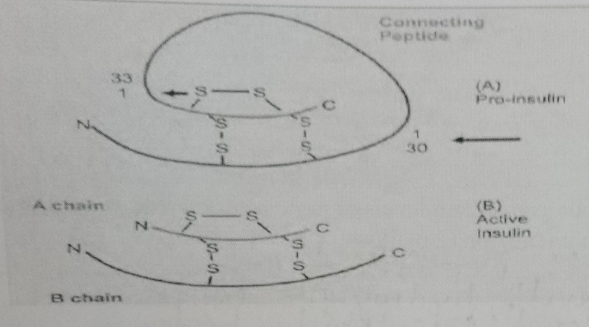
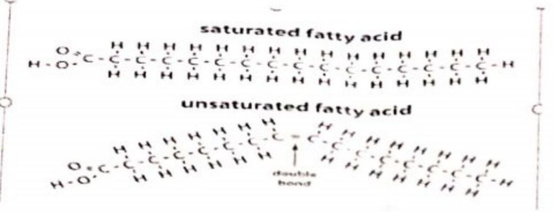
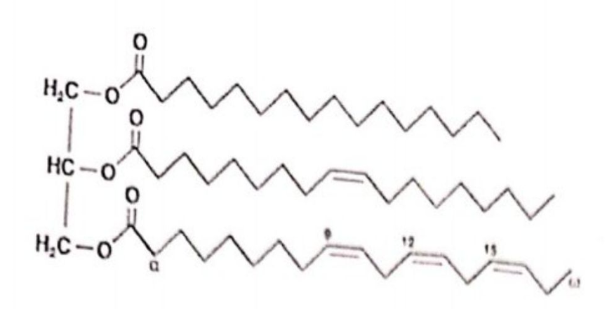

i. The normal reference range is typically 6.0 to 8.3 g/dL (60-83 g/L).
ii. Serum.
iii. Ranges are established by testing a large, healthy representative population and calculating the mean value ± 2 standard deviations (capturing 95% of the healthy population).
iv. Albumin; it makes up approximately 55-60% of total plasma proteins.
v. Maintenance of colloid osmotic pressure (oncotic pressure) or transport of various substances (e.g., hormones, fatty acids, drugs).
vi. C-reactive protein (CRP) or Fibrinogen (Acute phase reactants).
vii. Acute phase reactant / Globulin.
viii. The Liver.
i. Tertiary structure (and potentially Quaternary structure).
ii. The drug cleaves disulfide bonds (covalent bonds between two sulfur atoms). These bonds are critical for stabilizing the three-dimensional folding of a single polypeptide chain (tertiary) or the interaction between multiple subunits (quaternary).
iii.
iv.


